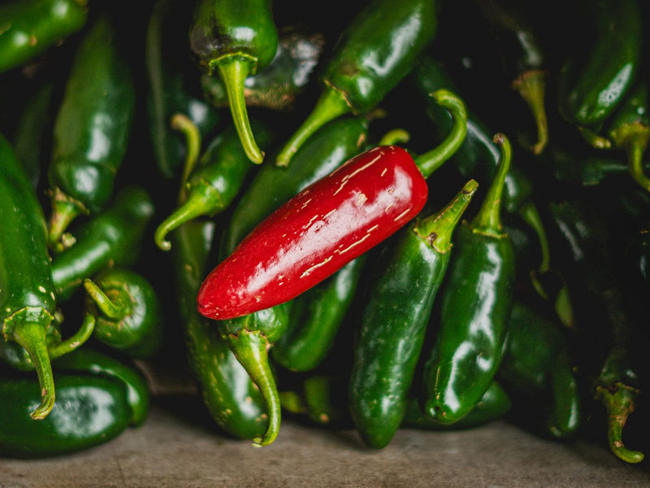
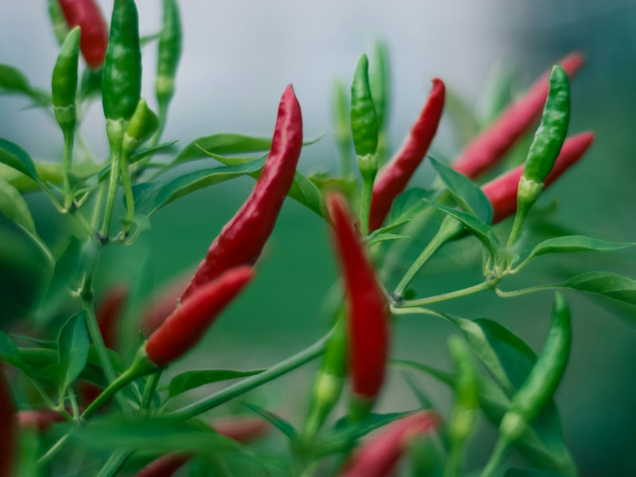

Jalapeño
Capsicum annuum
Grün geerntet knackig-frisch, reif rot und leicht süßlich. Passt zu Nachos, Salsa und gefüllt in den Ofen.
Mexiko
Chilis gehören zur Gattung Capsicum aus der Familie der Nachtschattengewächse, sind also nah mit Tomaten und Kartoffeln verwandt. Weltweit gibt es mehrere Tausend Sorten, die sich in Form, Farbe, Aroma und Schärfe stark unterscheiden: von der milden, dickfleischigen Schote bis zur kleinen Frucht, bei der schon ein Hauch genügt.
Für die Schärfe ist der Stoff Capsaicin verantwortlich. Gemessen wird sie in Scoville-Einheiten (SHU). Gemüsepaprika liegt bei null, eine Jalapeño bei einigen Tausend und die schärfsten Züchtungen erreichen weit über eine Million. Wie scharf eine Schote am Ende wird, hängt neben der Sorte auch von Sonne, Wassergaben und Reifegrad ab.
Botanisch teilt man die kultivierten Chilis in fünf Arten ein. Wer die Art kennt, kann Wuchs, Aroma und Ansprüche einer Sorte schon grob einschätzen. Unten findest du zuerst einen Überblick über die fünf Arten, danach stelle ich dir einige bekannte Sorten im Porträt vor.
Steckbriefe ausgewählter Sorten. Die Schärfe wird auf einer Skala von 1 bis 5 angegeben.

Capsicum annuum
Grün geerntet knackig-frisch, reif rot und leicht süßlich. Passt zu Nachos, Salsa und gefüllt in den Ofen.
Mexiko

Capsicum annuum
Scharf mit klarer, neutraler Schärfe. Ideal getrocknet als Pulver oder für Saucen und Eintöpfe.
Südamerika

Capsicum chinense
Sehr scharf mit fruchtigem Aroma. Ideal für Hot Sauce, Salsa und Marinaden.
Mittel- und Südamerika

Capsicum baccatum
Fruchtig mit leichter Zitrusnote und mittlerer Schärfe. Die wichtigste Chili der peruanischen Küche, etwa für Ají-Sauce und Ceviche.
Peru

Capsicum chinense
Extrem scharf mit fruchtiger Süße am Anfang. Nur für Geübte und stets in winzigen Mengen.
USA